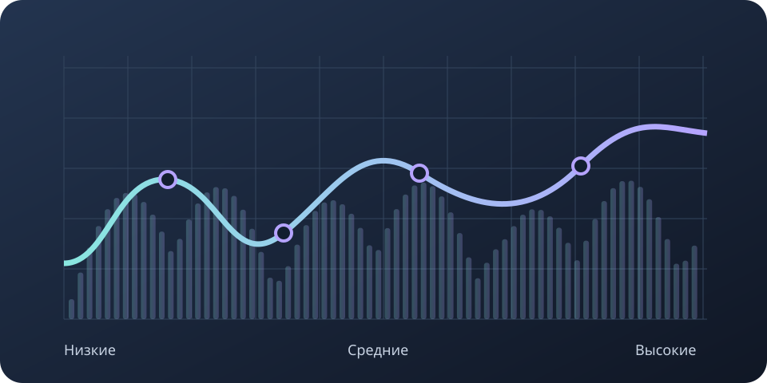

Сначала найди проблему
Меняй частоты, когда понимаешь, что именно мешает. Универсальной настройки для любого голоса нет.
Сведение музыки
Эквалайзер позволяет отдельно менять низкие, средние и высокие частоты. Например, убрать гул или сделать голос менее резким.

| Частоты | Как звучат | Что проверить |
|---|---|---|
| 20–60 Гц | Очень низкий гул | Не занимает ли ненужный низ место в песне |
| 60–120 Гц | Основа баса и большого барабана | Не мешают ли они друг другу |
| 120–500 Гц | Теплота, иногда глухое звучание | Не становится ли всё мутным |
| 500–2000 Гц | Основная часть голоса и инструментов | Хорошо ли различимы слова |
| 2000–6000 Гц | Чёткость и резкость | Не режет ли звук слух |
| 6000–12000 Гц | Шипение и блеск | Не слишком ли выделяются «с» и «ш» |
Меняй частоты, когда понимаешь, что именно мешает. Универсальной настройки для любого голоса нет.
Красивый звук одной дорожки может мешать остальным. Проверяй изменения вместе с инструментами.
Включай и выключай эффект при близкой громкости: более громкий вариант часто кажется лучше.